Where the words happen
Every place the film builds, ranked by how much is said there: the ground and trees and roads and waters of each, the light it plays in, the people who stand in it and what they wear, and how much of it the LEGO world already has. Drawn from the film's 152 scenes and every spoken line, measured when this page was made.
29 scenes have keyframes, 29 are in the film build, 24 are covered by a kit. 4 scenes play at open sea with no set (12 lines of dialogue). locations.json holds everything below.
The locations, ranked by dialogue
Lines of dialogue spoken in scenes set there (the narrator's apart); click a heading to sort. Gold figures count scenes placed here by inference. Chips: card the LEGO location card, frames the film's keyframe sheets, kit a kit drawn from the place.
| # | Location | Dialogue | Scenes | Ground | Vegetation | In the LEGO world |
|---|---|---|---|---|---|---|
| 1 | Megaron Hall megaron-hall · Book XVI, XVII, XVIII, XIX, XX, XXI, XXII, XXIII |
127+25 narr. | 36 | interior |
reeds | cardframes B19-S04frames B21-S07frames B22-S01frames B23-S04kit: The Bow and the Hallkit: The Scarkit: The Palace of Odysseuskit: The Bed |
| 2 | Odysseus's palace threshold and hall odysseuss-palace-threshold-and-hall · Book I, IV, XX |
22 (15)+3 narr. | 6 | interior court |
– | cardframeskitkit planned: the-opening |
| 3 | Eumaeus Hut Interior eumaeus-hut-interior · Book XIV, XVI |
19 (6)+4 narr. | 6 | interior |
– | cardframes B16-S03kit |
| 4 | Circe's forest palace circes-forest-palace · Book X |
18 (8)+5 narr. | 4 | interior court, plain |
woods & forest | cardframes B10-S04kit: Circe's House |
| 5 | Cimmerian shore and underworld pit cimmerian-shore-and-underworld-pit · Book XI |
17 (8)+14 narr. | 7 | underworld coast, sea |
woods & forest, poplar, willow | cardframes B11-S01kit: The Land of the Dead |
| 6 | Menelaus's palace menelauss-palace · Book IV, XV |
17 (7)+4 narr. | 5 | interior court, underworld |
– | cardframeskit: Helen Knows Him |
| 7 | Polyphemus's cave polyphemuss-cave · Book IX |
16 (5)+4 narr. | 5 | cave interior |
olive | cardframes B09-S09kit: The Cave of the Cyclops |
| 8 | Phorcys harbor phorcys-harbor · Book XIII |
14 (10)+4 narr. | 4 | coast cliff, cave |
olive | cardframes B13-S01kit |
| 9 | Ithacan assembly ground ithacan-assembly-ground · Book II |
13+2 narr. | 4 | plain hill |
– | cardframes B02-S02kit: Penelope's Loom |
| 10 | Pylos sacrificial beach pylos-sacrificial-beach · Book III |
11 (4)+3 narr. | 3 | coast sea |
– | cardframeskit |
| 11 | Alcinous's palace alcinouss-palace · Book VII |
8 (3)+3 narr. | 3 | interior |
– | cardframeskit |
| 12 | Olympian council hall olympian-council-hall · Book I, V |
8 (2)+2 narr. | 3 | olympus interior |
– | cardframeskit: Calypso's Isle and the Raftkit planned: the-opening |
| 13 | Laertes's orchard laertess-orchard · Book XXIV |
8+0 narr. | 2 | plain court, hill, mountain |
fig, orchard, pear, apple, vine | cardframes B24-S03kit |
| 14 | Farm battlefield at peace farm-battlefield-at-peace · Book XXIV |
7+2 narr. | 2 | plain court, mountain, hill |
grass & meadow, orchard | cardframeskit |
| 15 | Eumaeus's pig farm eumaeuss-pig-farm · Book XIV |
7+1 narr. | 2 | plain court, mountain, interior |
– | cardframes B14-S01kit |
| 16 | Ogygia cavern and grove ogygia-cavern-and-grove · Book V |
7+1 narr. | 2 | cave coast, interior, island |
woods & forest, vine | cardframeskit: Calypso's Isle and the Raft |
| 17 | River washing pools river-washing-pools · Book VI |
6 (3)+3 narr. | 2 | plain coast, court |
woods & forest, grass & meadow | cardframes B06-S03kit |
| 18 | Nestor's palace and courtyard nestors-palace-and-courtyard · Book III |
6+2 narr. | 2 | court underworld |
– | cardframeskit |
| 19 | Aeaea funeral shore aeaea-funeral-shore · Book XII |
5 (4)+4 narr. | 2 | coast sea, island |
woods & forest | cardframeskit |
| 20 | Feast hall at attentive silence feast-hall-at-attentive-silence · Book VIII |
5+2 narr. | 2 | interior |
– | cardframes B08-S05kit: The Wooden Horse |
| 21 | Phaeacian assembly ground phaeacian-assembly-ground · Book VIII |
5+2 narr. | 2 | plain coast, sea |
– | cardframeskit |
| 22 | Fight threshold fight-threshold · Book XVIII |
5+1 narr. | 1 | court plain, interior |
– | cardframeskit |
| 23 | Seal beach seal-beach · Book IV |
5+0 narr. | 1 | coast sea, island |
– | cardframes B04-S05kit |
| 24 | Thrinacia thrinacia · Book XII |
4+6 narr. | 2 | island sea, coast |
– | cardframes B12-S06kit |
| 25 | Ogygia shore ogygia-shore · Book V |
4+1 narr. | 1 | coast cave, hill, sea |
– | cardframeskit |
| 26 | Phaeacian athletic field phaeacian-athletic-field · Book VIII |
4+1 narr. | 1 | plain coast |
– | cardframeskit |
| 27 | Phaeacian royal chamber phaeacian-royal-chamber · Book VI |
4+1 narr. | 1 | interior plain |
– | cardframeskit |
| 28 | Punishment landscape punishment-landscape · Book XI |
4+1 narr. | 1 | underworld plain, hill |
asphodel | cardframeskit |
| 29 | Forest meeting path forest-meeting-path · Book X |
4+0 narr. | 1 | plain |
woods & forest | cardframes B10-S05kit: Circe's House |
| 30 | Island of Syria memory island-of-syria-memory · Book XV |
4+0 narr. | 1 | island coast, hill |
– | cardframeskit |
| 31 | Nymph cave nymph-cave · Book XIII |
4+0 narr. | 1 | cave plain |
– | cardframeskit |
| 32 | Phaeacian feast hall phaeacian-feast-hall · Book IX |
4+0 narr. | 1 | interior plain |
– | cardframeskit |
| 33 | Troy interior memory set troy-interior-memory-set · Book IV |
4+0 narr. | 1 | interior court |
– | cardframeskit: Helen Knows Him |
| 34 | Wooden horse interior wooden-horse-interior · Book IV |
4+0 narr. | 1 | interior |
– | cardframes B04-S04kit: The Wooden Horsekit: The Citadel of Troykit: Helen Knows Him |
| 35 | Sirens' island sirens-island · Book XII |
3+3 narr. | 1 | island coast, plain, sea |
grass & meadow, meadow flowers | cardframes B12-S03kit: The Sirens |
| 36 | Telepylus harbor telepylus-harbor · Book X |
3+3 narr. | 1 | coast cliff |
– | cardframes B10-S02kit: The Bag of Winds |
| 37 | Weapon storeroom weapon-storeroom · Book XIX, XXI |
3+2 narr. | 2 | interior |
– | cardframeskit |
| 38 | Aeolia floating island aeolia-floating-island · Book X |
3+2 narr. | 1 | island interior, sea, coast |
– | cardframes B10-S01kit: The Bag of Winds |
| 39 | Ithacan meeting and funeral ground ithacan-meeting-and-funeral-ground · Book XXIV |
3+2 narr. | 1 | plain court, underworld, island |
– | cardframeskit |
| 40 | Narrow monster strait narrow-monster-strait · Book XII |
3+2 narr. | 1 | sea cliff, coast |
fig | cardframes B12-S04kit: Scylla and Charybdis |
| 41 | Aeaea coast and forest aeaea-coast-and-forest · Book X |
3+1 narr. | 1 | coast hill, island, interior |
woods & forest | cardframeskit |
| 42 | Cyclops beach and waiting ship cyclops-beach-and-waiting-ship · Book IX |
3+1 narr. | 1 | coast cliff, cave, sea |
scrub & thicket | cardframeskit |
| 43 | Ismarus coast and town ismarus-coast-and-town · Book IX |
3+1 narr. | 1 | coast plain, sea, hill |
– | cardframeskit |
| 44 | Ithacan shore ithacan-shore · Book II |
3+1 narr. | 1 | coast sea |
– | cardframeskit |
| 45 | Palace outer yard palace-outer-yard · Book XXI |
3+1 narr. | 1 | court interior, plain, underworld |
– | cardframeskit |
| 46 | Phaeacian orchard and garden phaeacian-orchard-and-garden · Book VII |
3+1 narr. | 1 | plain |
olive, fig, pear, apple, pomegranate, vine | cardframeskit |
| 47 | Pylos harbor pylos-harbor · Book XV |
3+1 narr. | 1 | coast sea |
– | cardframeskit |
| 48 | Road from river to Scheria road-from-river-to-scheria · Book VI |
3+1 narr. | 1 | plain coast, court |
woods & forest, poplar | cardframeskit |
| 49 | Secret Ithacan landing secret-ithacan-landing · Book XV |
3+1 narr. | 1 | coast plain, hill, sea |
olive | cardframeskit |
| 50 | Hand mills and grain room hand-mills-and-grain-room · Book XX |
3+0 narr. | 1 | interior plain |
grain | cardframeskit |
| 51 | Marriage chamber marriage-chamber · Book XXIII |
3+0 narr. | 1 | interior sea, plain |
olive | cardframeskit: The Bed |
| 52 | Olympian decision space olympian-decision-space · Book XXIV |
3+0 narr. | 1 | olympus interior, hill |
– | cardframeskit |
| 53 | Palace storeroom palace-storeroom · Book II |
3+0 narr. | 1 | interior |
– | cardframeskit |
| 54 | Scheria city and harbor scheria-city-and-harbor · Book VII |
3+0 narr. | 1 | coast court |
– | cardframeskit |
| 55 | Scherian coast and river mouth scherian-coast-and-river-mouth · Book V |
3+0 narr. | 1 | coast |
olive, woods & forest | cardframeskit |
| 56 | Upper chamber and stair upper-chamber-and-stair · Book XXIII |
3+0 narr. | 1 | interior plain |
– | cardframeskit: Penelope's Loom |
| 57 | Ithaca town road and fountain ithaca-town-road-and-fountain · Book XVII |
2+1 narr. | 1 | plain hill, court |
poplar, hedge | cardframeskit |
| 58 | Pylos-to-Sparta road pylos-to-sparta-road · Book III |
2+1 narr. | 1 | plain mountain, court |
– | cardframeskit |
| 59 | Ogygia timber grove ogygia-timber-grove · Book V |
2+0 narr. | 1 | coast island, hill |
woods & forest, poplar, alder, pine | cardframes B05-S04kit: Calypso's Isle and the Raft |
| 60 | Road to Hades road-to-hades · Book XXIV |
1+6 narr. | 2 | underworld plain, sea, coast |
asphodel, grass & meadow | cardframeskit |
| 61 | Lotus shore and meadow lotus-shore-and-meadow · Book IX |
1+4 narr. | 1 | coast plain, sea |
meadow flowers, lotus, grass & meadow | cardframes B09-S03kit |
| 62 | Mount Parnassus hunt mount-parnassus-hunt · Book XIX |
1+4 narr. | 1 | mountain hill, plain |
scrub & thicket, woods & forest | cardframeskit |
| 63 | Cyclops coast cyclops-coast · Book IX |
1+3 narr. | 1 | coast plain, cave, sea |
grass & meadow | cardframeskit |
| 64 | Goat island harbor goat-island-harbor · Book IX |
1+3 narr. | 1 | island coast, hill |
woods & forest | cardframeskit |
| 65 | Palace dung heap and gate palace-dung-heap-and-gate · Book XVII |
1+2 narr. | 1 | court interior, plain |
– | cardframes B17-S03kit: Argos |
| 66 | Farmhouse feast farmhouse-feast · Book XXIV |
1+1 narr. | 1 | plain interior, hill, court |
orchard | cardframes B24-S05kit |
| 67 | Road to Laertes's farm road-to-laertess-farm · Book XXIII |
1+0 narr. | 1 | plain court, mountain, hill |
orchard, vine | cardframeskit |
| 68 | Farm-to-palace route farm-to-palace-route · Book – |
0+0 narr. | 0 | plain court, hill |
hedge | cardframeskit |


The scenes with the most said
The fifteen scenes with the most lines of dialogue, and where they are set.
| Scene | Title | Set in | Dialogue |
|---|---|---|---|
| OD-B18-S05 | Melantho and Eurymachus Attack | Megaron Hall | 7 |
| OD-B01-S06 | The Goddess Departs; the Prince Speaks | Odysseus's palace threshold and hall | 5 |
| OD-B10-S04 | Circe Transforms the Crew | Circe's forest palace | 5 |
| OD-B10-S07 | The Men Restored | Circe's forest palace | 5 |
| OD-B17-S05 | Antinous Throws the Stool | Megaron Hall | 5 |
| OD-B18-S02 | Odysseus Drops Irus | Fight threshold | 5 |
| OD-B04-S05 | Menelaus Wrestles Proteus | Seal beach | 5 |
| OD-B09-S09 | The Blinding | Polyphemus's cave | 5 |
| OD-B16-S03 | The Father Reveals Himself | Eumaeus Hut Interior | 5 |
| OD-B16-S04 | The Plan against the Suitors | Megaron Hall | 5 |
| OD-B17-S06 | Penelope Summons the Stranger | Megaron Hall | 5 |
| OD-B19-S03 | The Stranger Describes Odysseus | Megaron Hall | 5 |
| OD-B20-S03 | The Herdsmen Arrive | Megaron Hall | 5 |
| OD-B04-S07 | The Suitors Prepare an Ambush | Odysseus's palace threshold and hall inferred | 4 |
| OD-B10-S06 | Odysseus Defeats Circe's Spell | Circe's forest palace inferred | 4 |
The landscape palette
What the whole poem is made of: each kind of ground, growth, way and water, with the number of locations whose sources name it and the places themselves (the most-spoken first). Found by word lists in the asset and scene texts; see the method below.
Ground
| coast | 17 | Phorcys harbor, Pylos sacrificial beach, Aeaea funeral shore, Seal beach, Ogygia shore and 12 more |
| interior | 16 | Megaron Hall, Odysseus's palace threshold and hall, Eumaeus Hut Interior, Circe's forest palace, Menelaus's palace and 11 more |
| plain | 16 | Ithacan assembly ground, Laertes's orchard, Farm battlefield at peace, Eumaeus's pig farm, River washing pools and 11 more |
| island | 5 | Thrinacia, Island of Syria memory, Sirens' island, Aeolia floating island, Goat island harbor |
| court | 4 | Nestor's palace and courtyard, Fight threshold, Palace outer yard, Palace dung heap and gate |
| underworld | 3 | Cimmerian shore and underworld pit, Punishment landscape, Road to Hades |
| cave | 3 | Polyphemus's cave, Ogygia cavern and grove, Nymph cave |
| olympus | 2 | Olympian council hall, Olympian decision space |
| mountain | 1 | Mount Parnassus hunt |
| sea | 1 | Narrow monster strait |
Vegetation
| woods & forest | 12 | Circe's forest palace, Cimmerian shore and underworld pit, Ogygia cavern and grove, River washing pools, Aeaea funeral shore and 7 more |
| grass & meadow | 6 | Farm battlefield at peace, River washing pools, Sirens' island, Road to Hades, Lotus shore and meadow and 1 more |
| olive | 6 | Polyphemus's cave, Phorcys harbor, Phaeacian orchard and garden, Secret Ithacan landing, Marriage chamber and 1 more |
| orchard | 5 | Laertes's orchard, Farm battlefield at peace, Phaeacian orchard and garden, Farmhouse feast, Road to Laertes's farm |
| poplar | 4 | Cimmerian shore and underworld pit, Road from river to Scheria, Ithaca town road and fountain, Ogygia timber grove |
| vine | 4 | Laertes's orchard, Ogygia cavern and grove, Phaeacian orchard and garden, Road to Laertes's farm |
| fig | 3 | Laertes's orchard, Narrow monster strait, Phaeacian orchard and garden |
| meadow flowers | 3 | Sirens' island, Phaeacian orchard and garden, Lotus shore and meadow |
| apple | 2 | Laertes's orchard, Phaeacian orchard and garden |
| asphodel | 2 | Punishment landscape, Road to Hades |
| hedge | 2 | Ithaca town road and fountain, Farm-to-palace route |
| pear | 2 | Laertes's orchard, Phaeacian orchard and garden |
| scrub & thicket | 2 | Cyclops beach and waiting ship, Mount Parnassus hunt |
| alder | 1 | Ogygia timber grove |
Roads and paths
| path & track | 30 | Megaron Hall, Phorcys harbor, Laertes's orchard, Farm battlefield at peace, Eumaeus's pig farm and 25 more |
| threshold & sill | 28 | Megaron Hall, Odysseus's palace threshold and hall, Eumaeus Hut Interior, Circe's forest palace, Polyphemus's cave and 23 more |
| route | 27 | Megaron Hall, Odysseus's palace threshold and hall, Ithacan assembly ground, Pylos sacrificial beach, Alcinous's palace and 22 more |
| gate | 20 | Megaron Hall, Odysseus's palace threshold and hall, Menelaus's palace, Laertes's orchard, Farm battlefield at peace and 15 more |
| harbour & landing | 19 | Phorcys harbor, Aeaea funeral shore, Phaeacian assembly ground, Seal beach, Thrinacia and 14 more |
| road | 16 | Laertes's orchard, Farm battlefield at peace, Nestor's palace and courtyard, Phaeacian assembly ground, Fight threshold and 11 more |
| courtyard | 13 | Megaron Hall, Circe's forest palace, Menelaus's palace, Laertes's orchard, Farm battlefield at peace and 8 more |
| stair & steps | 9 | Megaron Hall, Odysseus's palace threshold and hall, Laertes's orchard, Farm battlefield at peace, Fight threshold and 4 more |
| fountain & spring | 5 | Eumaeus's pig farm, Ogygia cavern and grove, Phaeacian orchard and garden, Ithaca town road and fountain, Goat island harbor |
Waters
| sea | 22 | Cimmerian shore and underworld pit, Pylos sacrificial beach, Ogygia cavern and grove, Aeaea funeral shore, Phaeacian assembly ground and 17 more |
| harbour | 12 | Phorcys harbor, Phaeacian assembly ground, Island of Syria memory, Telepylus harbor, Aeolia floating island and 7 more |
| river | 6 | Cimmerian shore and underworld pit, River washing pools, Road from river to Scheria, Marriage chamber, Scherian coast and river mouth and 1 more |
| bath | 5 | Menelaus's palace, Laertes's orchard, Nestor's palace and courtyard, Troy interior memory set, Farmhouse feast |
| pool & basin | 5 | River washing pools, Nestor's palace and courtyard, Punishment landscape, Telepylus harbor, Palace dung heap and gate |
| spring & fountain | 5 | Eumaeus's pig farm, Ogygia cavern and grove, Phaeacian orchard and garden, Ithaca town road and fountain, Goat island harbor |
| rain & storm | 2 | Thrinacia, Mount Parnassus hunt |
| strait & whirlpool | 2 | Narrow monster strait, Cyclops coast |
| blood & libation | 1 | Cimmerian shore and underworld pit |
Time of day
| night | 36 | Megaron Hall, Odysseus's palace threshold and hall, Eumaeus Hut Interior, Circe's forest palace, Cimmerian shore and underworld pit and 31 more |
| day | 28 | Megaron Hall, Eumaeus Hut Interior, Circe's forest palace, Menelaus's palace, Polyphemus's cave and 23 more |
| dawn | 21 | Megaron Hall, Odysseus's palace threshold and hall, Menelaus's palace, Polyphemus's cave, Phorcys harbor and 16 more |
| dusk | 10 | Megaron Hall, Eumaeus Hut Interior, Polyphemus's cave, Phorcys harbor, Laertes's orchard and 5 more |
Weather
| wind | 14 | Megaron Hall, Eumaeus Hut Interior, Circe's forest palace, Aeaea funeral shore, Thrinacia and 9 more |
| smoke | 12 | Megaron Hall, Eumaeus Hut Interior, Farm battlefield at peace, Phaeacian feast hall, Weapon storeroom and 7 more |
| calm | 8 | Thrinacia, Troy interior memory set, Sirens' island, Aeolia floating island, Ismarus coast and town and 3 more |
| mist & fog | 6 | Megaron Hall, Cimmerian shore and underworld pit, Phorcys harbor, Alcinous's palace, Phaeacian orchard and garden and 1 more |
| cold | 6 | Megaron Hall, Eumaeus Hut Interior, Cimmerian shore and underworld pit, Eumaeus's pig farm, Ithaca town road and fountain and 1 more |
| thunder & lightning | 4 | Megaron Hall, Farm battlefield at peace, Thrinacia, Hand mills and grain room |
| storm | 3 | Eumaeus Hut Interior, Alcinous's palace, Thrinacia |
| rain | 2 | Eumaeus Hut Interior, Mount Parnassus hunt |
Costumes by place
Who stands in each place and what they wear or carry: from each figure's own asset, and (in italics) from the scene that stages them there. Portraits are the LEGO character cards. Places in order of dialogue.
Megaron Hall38 figures · 127 lines · interior
Props there: Aegis, Antinouss Cup And Feast Table, Axis Shot Arrow, Begging Bag, Body Removal And Cleaning Tools, Bow Heating Fire And Tallow, Courtship Gifts, Courtyard Execution Cable, Courtyard Gate And Cable, Defender Armor Set, Foot Washing Basin, Goat Sausages, Odysseuss Bow, Odysseuss Remembered Cloak And Brooch, Olive Tree Marriage Bed, Ox Hoof, Palace Weapon Collection, Palace Weapons, Quiver And Arrows, Raised Dining Tables, Storeroom Rope And Rafter, Thrown Footstool, Twelve Axe Heads, Wine Cup, Womens Chamber Doors
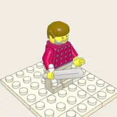
The rags snap to tunic under Athena's flare at u=0.5 — put divine-fx.athenas-restoration on that exact frame.
Philoetius brings the cattle, takes the stranger's hand and weeps, because the body in the rags is the shape of Odysseus. (B20-S03)
the veiled queen of Ithaca, faithful wife who waits. Mature woman in a long dress under a sheer drawn veil, long hair framing the face; stable identity across views.
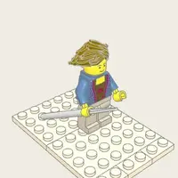
Youthful silhouette: slighter build, shorter stature, beardless, dark short hair, princely tunic + cloak.
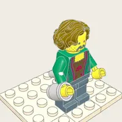
Young, strong, arrogant noble: fine tunic + cloak, a short well-kept beard, and a face built to accuse.
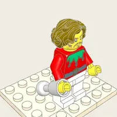
Silhouette: taller athletic build, clean-shaven, sleek dark styled hair, a fine noble ROBE with a mantled cloak (well-dressed, moneyed) — deliberately distinct from Odysseus (bearded, curls, tunic) and the slighter beardless Telemachus.
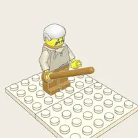
A sturdy middle-aged-to-older herdsman in a rough belted tunic under a heavy hide cloak, weathered bearded face, leaning on a tall herdsman's staff.
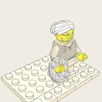
Elderly woman: headscarf (opaque kerchief), long dress under a working apron, a slightly stooped bearing.
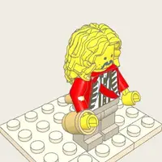
Son of Nisus of Dulichium, the one man in the hall whose talk pleases Penelope: he is the suitor who blocks the ambush of Telemachus by putting a condition on it — "not until we have asked the will of Zeus" — and the one Odysseus, in beggar's rags, warns to…
Not an elder like Halitherses but a lean, alert man of RANK on the run: a bloodguilt exile of the Melampus prophetic line, fine robe + cloak gone travel-worn, intense far-seeing eyes, a seer's bearing.
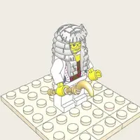
—
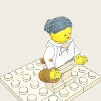
Where the goatherd's contempt is a man's swagger — one fist on the hip, spine lolled, a kick — hers is a young woman's: a fine gift-gown she was never given for work, hair bound up and glossy, BOTH hands planted at the waist with the elbows swung wide, chin…
The mortal shell is complete (weathered skin, a full white loyalist's beard, a long robe and cloak) but one tell leaks through: the eyes stay unnaturally BRIGHT, an over-lit divine glint no old man owns.
Eumaeus — grizzled, hide-cloaked, planted on a staff, arms swung open. Philoetius — the biggest of the three (a cattleman's frame), light sun-bleached tunic and bare drover's shins, pale grizzled curls, and a body that is always leaning TOWARD someone:…
—
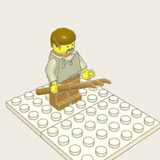
—
He is the FIRST man to take up the great bow in Book XXI, and the first to fail it: soft, un-callused, indoor hands that have handled entrails and libation cups, never an oar or a plough. Failing, he does not merely quit — he READS the weapon, and pronounces…
—
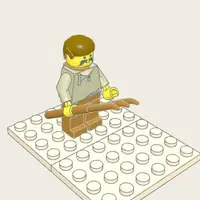
Where the swineherd is grizzled, hide-cloaked, planted on a staff and open-handed, Melanthius is a younger wiry man with black curls and a trimmed black beard, a suitor's gift-mantle thrown over a working tunic, bare goatherd shins — and a body language of…
and 20 more in locations.json
Odysseus's palace threshold and hall13 figures · 22 lines · interior
Props there: Golden Pitcher And Silver Basin, Guest Chair And Footstool
Youthful silhouette: slighter build, shorter stature, beardless, dark short hair, princely tunic + cloak.
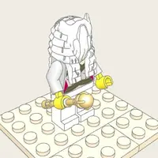
The mortal shell is complete — weathered sailor's skin, dark seafarer's beard, a heavy hooded cloak — but one tell leaks through: the eyes stay unnaturally BRIGHT, a divine glint that never quite belongs to a mortal captain.
Armored / cloaked goddess with a borne spear and a pushed-back plumed helmet crest; bound hair; stable identity across views.
the veiled queen of Ithaca, faithful wife who waits. Mature woman in a long dress under a sheer drawn veil, long hair framing the face; stable identity across views.
Middle-aged crier in a herald's tunic, a staff (kerykeion) in his off hand, who risks his own skin to warn the house of the suitors' murder-plot.
Young, strong, arrogant noble: fine tunic + cloak, a short well-kept beard, and a face built to accuse.
The rags snap to tunic under Athena's flare at u=0.5 — put divine-fx.athenas-restoration on that exact frame.
—
—
Book XX opens with Odysseus lying awake on an undressed ox-hide in the forecourt, counting the maids as they slip from the women's quarters and go laughing down the portico to the suitors' beds. FORMATION file | spill | pairs | cluster | freeze | (dir:-1 =…
—
—
—
Eumaeus Hut Interior7 figures · 19 lines · interior
A sturdy middle-aged-to-older herdsman in a rough belted tunic under a heavy hide cloak, weathered bearded face, leaning on a tall herdsman's staff.
Eumaeus pities the ragged stranger but still refuses the claim that his master is near. (B14-S03)
Youthful silhouette: slighter build, shorter stature, beardless, dark short hair, princely tunic + cloak.
The rags snap to tunic under Athena's flare at u=0.5 — put divine-fx.athenas-restoration on that exact frame.
Armored / cloaked goddess with a borne spear and a pushed-back plumed helmet crest; bound hair; stable identity across views.
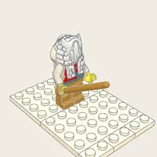
This is Odysseus the veteran fighter playing the harmless mendicant: he meets the swineherd's dogs not with the staff but with instant, deliberate submission — sitting down and letting the staff fall from his hand — then endures dismissal, and finally works…
The stranger tells a story of once tricking Odysseus, during the war, into getting a freezing scout a cloak — the ask folded into the tale. (B14-S04)
The single loudest canine signal. hackle raised zigzag along the topline -> flat. teeth bared fang triangles in a dark maw -> no teeth, a lolling TONGUE in an open panting mouth. tail stiff high sabre, still -> wagging arc with sweep marks. topline high and…
—
Circe's forest palace7 figures · 18 lines · interior
Props there: Circes Wand, Drugged Cup
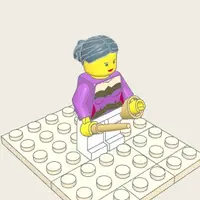
A striking woman in an elaborate flowing gown, long auburn hair, a subtle magical radiance, and a WAND she can hold, level, or strike with.
—
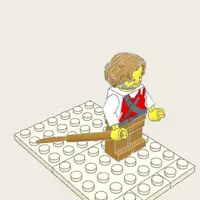
A sturdy, middle-aged veteran crewman: weathered skin, SHORT GRAYING hair + a full grizzled BEARD, plain sailor's TUNIC with a travel CLOAK, planted stocky build. Deliberately distinct from Odysseus (dark curls, kingly bearing) and from the young beardless…
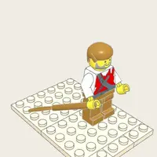
Youthful silhouette: slight build, short stature, beardless, tousled hair, a plain sailor's tunic, bare legs.
—
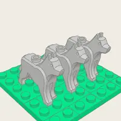
—
—
Cimmerian shore and underworld pit13 figures · 17 lines · underworld
Props there: Elpenors Oar, Golden Staff Of Tiresias
—
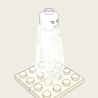
—
—
Distinct silhouette: a broad BEARDED warrior-king in battle ARMOR under a heavy cloak, faded near-white hair and beard, standing bare-shinned in sandals. Over the armor sit bespoke WOUND-MARKS — the death-blows at throat and breast — drawn a touch more…
He turns his massive back and stalks off into the dark without a word: the most eloquent silence in the poem — a huge hulking armored figure refusing eye contact or speech over the armor judgment. Distinct silhouette: a big, broad, BEARDED warrior in heavy…
An older woman: veil + long dress, a gentle sorrowful face, a TRANSLUCENT light tone, and a LOWER BODY that dissolves into wisps (a shade has no solid feet). Custom layers add a pale mantle/veil over head + shoulders, and a pale skirt that trails off into…
Each sheep is built the same way — a heavy near-black scalloped FLEECE (dark wool blob + deeper underside), four short dark cloven legs (upper/lower segments + a split hoof block), a dark wedge HEAD with eye, ear, nostril; the RAM adds a pair of pale BONE…
—
—
Scene function (OD-B11-S01): a crowd of PALE TRANSLUCENT shades — the transparent dead of varied ages and wounds — draw toward the fresh blood but are HELD OUTSIDE a sword boundary. The living hero + the sword's owner are NOT baked in — only the diegetic…
Drawn PALE — very light gown tones with a hard black contour so each shade reads as a bright, near-transparent form; the dark blood-trench at the front is the single deep-ink accent.
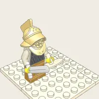
Distinct silhouettes so the two never read as one doubled figure: · Patroclus (LEFT) — the elder companion: curly hair, a short beard, light armor, a heavier steadier build, a hand laid over his heart. · Antilochus (RIGHT) — the youngest: beardless, short…
Distinct silhouette: a gaunt, BALD old seer in a long robe + cloak, a full pale beard, leaning on a GOLD ring-topped staff (drawn as a bespoke prop over the figure). He is a shade, so the whole figure is drawn faint (paper bleeds through the dot pass) — but…
Menelaus's palace7 figures · 17 lines · interior
Props there: Silver Mixing Bowl
Youthful silhouette: slighter build, shorter stature, beardless, dark short hair, princely tunic + cloak.
Menelaus speaks of Odysseus and Telemachus hides his tears behind his cloak. (B04-S02)
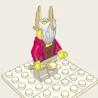
—
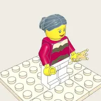
A beautiful woman in an elegant flowing gown, long hair, and a FINE JEWELLED DIADEM with a light veil that falls BEHIND the hair — the deliberate opposite of Penelope's grief-heavy drawn hood. Where Penelope reads as a dark, bowed, veiled dome, Helen reads…
Helen gives Telemachus a robe for his future bride. (B04-S06)
Armored / cloaked goddess with a borne spear and a pushed-back plumed helmet crest; bound hair; stable identity across views.
Youthful and beardless where Odysseus is bearded and Telemachus dark-haired: sun-warmed skin, short sandy hair, a bright open host's face.
—
—
Polyphemus's cave10 figures · 16 lines · cave
Props there: Cave Blocking Stone, Cheese Racks And Milk Vessels, Marons Wine Skin, Olivewood Stake, Wine Cup
—
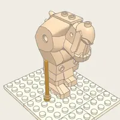
A COLOSSAL one-eyed giant: a single great central eye (no paired eyes), a shaggy mane and wild beard, a muscular brute in a rough hide tunic.
—
The fleece contour is a scalloped wool blob; goats stay crisp and lean so the two kinds separate at a glance.
—
—
—
—
—
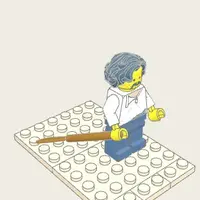
Ordinary men in tunics — no armor, no rank — expressive terror faces and thrown-open limbs.
Phorcys harbor5 figures · 14 lines · coast
Props there: Beggar Staff And Bag, Gift Chest And Treasures, Gift Inventory
—
Armored / cloaked goddess with a borne spear and a pushed-back plumed helmet crest; bound hair; stable identity across views.
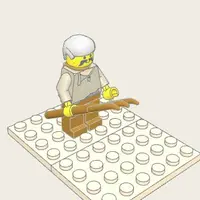
—
—
Not the Trojan-spy beggar (that man is still young, curly, dark-bearded): She dims the eyes, thins the flaxen hair to a wispy grey, shrivels the fair skin, and folds the king down into a decrepit mendicant: bald-crowned thin grey hair, a straggly grey beard,…
Ithacan assembly ground13 figures · 13 lines · plain
Props there: Laertess Shroud And Loom
Youthful silhouette: slighter build, shorter stature, beardless, dark short hair, princely tunic + cloak.
Young, strong, arrogant noble: fine tunic + cloak, a short well-kept beard, and a face built to accuse.
Silhouette: young, cocky, athletic, clean-shaven with short tousled hair, a plain belted TUNIC over bare sandalled legs — deliberately NOT the fine noble robe+cloak of Eurymachus nor the bearded curls of Odysseus.
Scene function (OD-B02-S01): the oldest man of the island, bowed with age over a walking staff, rises FIRST to open the gathering — curious who has called them together, yet carrying an old grief for the son the Cyclops took.
Silhouette: taller athletic build, clean-shaven, sleek dark styled hair, a fine noble ROBE with a mantled cloak (well-dressed, moneyed) — deliberately distinct from Odysseus (bearded, curls, tunic) and the slighter beardless Telemachus.
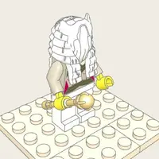
—
The staff is drawn BEHIND the figure so the near arm reads as gripping it.
—
—
a MEMORY-layer variant of Penelope shown at her work: the veiled queen leaning to a warp-weighted loom, hands working thread, a wistful, secretive face. Reuses Penelope's identity (veil, long hair, dress) but posed at the loom instead of standing in grief.
—
—
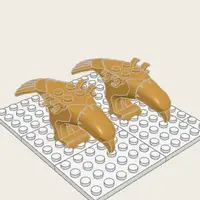
—
Pylos sacrificial beach8 figures · 11 lines · coast
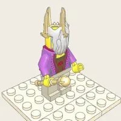
—
The mortal shell is complete (weathered skin, a full white loyalist's beard, a long robe and cloak) but one tell leaks through: the eyes stay unnaturally BRIGHT, an over-lit divine glint no old man owns.
Youthful silhouette: slighter build, shorter stature, beardless, dark short hair, princely tunic + cloak.
A memory-flashback variant of the crafty king: the SAME identity (weathered skin, dark curly hair, beard, tunic + cloak, bare sandalled legs) but carried younger and harder — an upright, decisive commander mid-battle, wheeling his ships back around to shore…
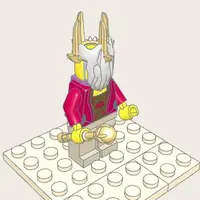
Two bearded warrior-kings in armor and cloaks, arms flung in opposed confrontational gestures before a drunken army at sunset.
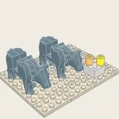
—
—
—
Alcinous's palace6 figures · 8 lines · interior
Props there: Recognized Garments
—
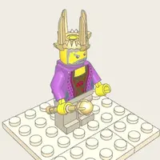
—
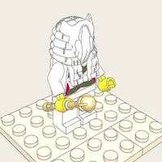
DISTINCT DRESS (the prompt asks for an elder LIKE Nestor/Aegyptius but set apart): where the war-generation Achaean elders wear mid-grey robes under a cloak, Echeneus is a PHAEACIAN — wrapped to the ankle in a heavy dark ceremonial MANTLE (garment:"cloak"),…
A mature, dignified woman in a rich robe over a long gown, wearing a FINE UPRIGHT CROWN (a full pointed crown, not Helen's low brow-band), carried with regal stillness and seated authority. Distinct from Helen (radiant, low luminous diadem, upright openness)…
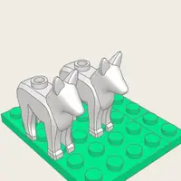
—
—
Olympian council hall4 figures · 8 lines · olympus
Props there: Athenas Bronze Spear, Golden Winged Sandals, Hermess Wand
Armored / cloaked goddess with a borne spear and a pushed-back plumed helmet crest; bound hair; stable identity across views.
The scene closes on Athena arming — golden sandals fastened, bronze spear taken up — and stepping off Olympus onto the descent route. (B01-S02)
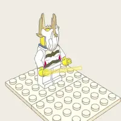
—
—
Hermes straps on his sandals, takes his wand, and skims across the sea. (B05-S01)
—
Laertes's orchard5 figures · 8 lines · plain
Props there: Farm Clothing And Tools
The rags snap to tunic under Athena's flare at u=0.5 — put divine-fx.athenas-restoration on that exact frame.
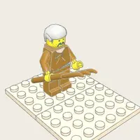
Odysseus's father: a former king who has put off the palace entirely and works his terraced farm by hand, in a patched labourer's tunic, white-headed, stooped, sun-dried and shrunken inside a frame that used to be royal. Laertes's identity is carried by four…
A sturdy middle-aged-to-older herdsman in a rough belted tunic under a heavy hide cloak, weathered bearded face, leaning on a tall herdsman's staff.
Eumaeus — grizzled, hide-cloaked, planted on a staff, arms swung open. Philoetius — the biggest of the three (a cattleman's frame), light sun-bleached tunic and bare drover's shins, pale grizzled curls, and a body that is always leaning TOWARD someone:…
Youthful silhouette: slighter build, shorter stature, beardless, dark short hair, princely tunic + cloak.
Farm battlefield at peace6 figures · 7 lines · plain
The rags snap to tunic under Athena's flare at u=0.5 — put divine-fx.athenas-restoration on that exact frame.
The mortal shell is complete (weathered skin, a full white loyalist's beard, a long robe and cloak) but one tell leaks through: the eyes stay unnaturally BRIGHT, an over-lit divine glint no old man owns.
Odysseus's father: a former king who has put off the palace entirely and works his terraced farm by hand, in a patched labourer's tunic, white-headed, stooped, sun-dried and shrunken inside a frame that used to be royal. Laertes's identity is carried by four…
Laertes prays, casts, and kills Eupithes through the helmet. (B24-S08)
He begins folded on a knee over his son's body and comes up, degree by degree, until he is running with a levelled spear. Identity is five figure params (iron-grey head, straight-cut hair rather than Laertes's curls, a full beard, an elder's mantle over a…
Laertes prays, casts, and kills Eupithes through the helmet. (B24-S08)
Everything a militia does here is four continuous per-member scalars — drive (stride + forward lean), recoil (weight thrown back), guard (shield off the hip and up over the head) and flee (turned around and running) — plus one angle, the spear's, which is the…
Youthful silhouette: slighter build, shorter stature, beardless, dark short hair, princely tunic + cloak.
Eumaeus's pig farm4 figures · 7 lines · plain
Props there: Farm Meal
A sturdy middle-aged-to-older herdsman in a rough belted tunic under a heavy hide cloak, weathered bearded face, leaning on a tall herdsman's staff.
This is Odysseus the veteran fighter playing the harmless mendicant: he meets the swineherd's dogs not with the staff but with instant, deliberate submission — sitting down and letting the staff fall from his hand — then endures dismissal, and finally works…
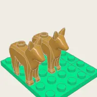
—
—
Ogygia cavern and grove2 figures · 7 lines · cave
Props there: Ambrosia And Nectar Service, Calypsos Loom, Hermess Wand
—
Hermes straps on his sandals, takes his wand, and skims across the sea. (B05-S01)
A self-possessed goddess in a long flowing gown, loose immortal hair, and a subtle radiance — beautiful, proud, and stung when the man she keeps is ordered away.
River washing pools4 figures · 6 lines · plain
Props there: Laundry Ball, Leafy Modesty Branch
A fresh, graceful girl in a simple BELTED gown with long loose hair and a slim LIGHT FILLET (a thin diadem band — NOT the jewelled crown of the older queens). Where Helen reads as a jewelled, regal presence and Penelope as a dark, veiled, bowed dome, Nausicaa…
—
—
—
Nestor's palace and courtyard4 figures · 6 lines · court
—
Youthful silhouette: slighter build, shorter stature, beardless, dark short hair, princely tunic + cloak.
The mortal shell is complete (weathered skin, a full white loyalist's beard, a long robe and cloak) but one tell leaks through: the eyes stay unnaturally BRIGHT, an over-lit divine glint no old man owns.
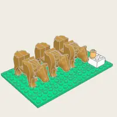
A single bovine quadruped (NOT humanoid): fully custom geometry built from engine primitives — deep barrel body, four articulated legs (upper/lower + hoof), thick dewlapped neck, elongated head with muzzle and ears, and a pair of curved GILDED horns rendered…
Aeaea funeral shore3 figures · 5 lines · coast
Props there: Elpenors Body And Oar, Instruction Props
A striking woman in an elaborate flowing gown, long auburn hair, a subtle magical radiance, and a WAND she can hold, level, or strike with.
—
—
Feast hall at attentive silence4 figures · 5 lines · interior
Props there: Demodocuss Lyre
—
—
Odysseus repeatedly hides his face in his cloak and weeps. (B08-S02)
The bard himself is NOT baked in — only a small diagrammatic stool+lyre focus the listeners face.
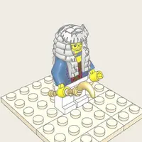
Robed, seated-bard bearing, a phorminx (lyre) cradled to the chest and raised as he projects.
Phaeacian assembly ground5 figures · 5 lines · plain
Props there: Bronze Sword With Ivory Hilt, Dance Ball
—
Staff + wreath are drawn around the figure so they read crisp.
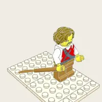
A young sprinter's build: no beard, short dark hair, a short athletic tunic, bare legs.
—
—
Fight threshold4 figures · 5 lines · court
Props there: Victory Meat And Wine
The rags snap to tunic under Athena's flare at u=0.5 — put divine-fx.athenas-restoration on that exact frame.
Odysseus tucks up his rags and reveals powerful thighs and shoulders. (B18-S02)
Then Athena lifts the stranger's rags, Irus reads the thighs, and every one of his loud parts goes out at once.
Son of Nisus of Dulichium, the one man in the hall whose talk pleases Penelope: he is the suitor who blocks the ambush of Telemachus by putting a condition on it — "not until we have asked the will of Zeus" — and the one Odysseus, in beggar's rags, warns to…
Young, strong, arrogant noble: fine tunic + cloak, a short well-kept beard, and a face built to accuse.
Seal beach3 figures · 5 lines · coast
—
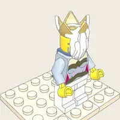
—
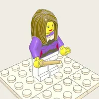
A graceful woman in a flowing sea-toned robe, long hair, who takes pity on Menelaos and teaches him the ambush of her father — how to seize the shifting Old Man of the Sea, and how to bear the reek of the seal-skins she tucks the men under (ambrosia under the…
Thrinacia6 figures · 4 lines · island
A sturdy, middle-aged veteran crewman: weathered skin, SHORT GRAYING hair + a full grizzled BEARD, plain sailor's TUNIC with a travel CLOAK, planted stocky build. Deliberately distinct from Odysseus (dark curls, kingly bearing) and from the young beardless…
—
Scene function (OD-B12-S06, the cattle of Helios on Thrinacia): the gaunt, famished crew performing a DISTORTED sacrifice — one man SLAUGHTERING a fallen ox with a knife, a second FLAYING it, others TENDING a roasting FIRE and turning meat on a SPIT, and two…
Radiant, unaging, so the hide reads a warm mid-light (not black). · SHEEP — woolly beasts: a scalloped FLEECE blob (lifted top lobe + shaded underside), four short cloven legs, a wedge head with ear + eye.
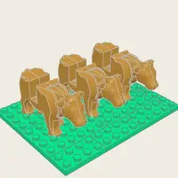
A broad sacred OX in profile facing +dir: · a deep barrel BODY (LIGHT hide — the Sun's white cattle — with a shaded shoulder mass + pale underbelly for form) · four sturdy hoofed LEGS (upper/lower segments + a blocky cloven hoof) · a thick NECK -> broad blunt…
—
Ogygia shore2 figures · 4 lines · coast
A self-possessed goddess in a long flowing gown, loose immortal hair, and a subtle radiance — beautiful, proud, and stung when the man she keeps is ordered away.
—
Phaeacian athletic field3 figures · 4 lines · plain
Props there: Discus
A young sprinter's build: no beard, short dark hair, a short athletic tunic, bare legs.
He reads as a young prince by FINER DRESS (a rich robe + a fastened cloak, shod not bare-legged, a slim brow-fillet of a prince) and by an OPEN, inviting bearing — beardless, bright-faced, chest turned out, a hand perpetually offered forward.
—
Phaeacian royal chamber1 figures · 4 lines · interior
Props there: Laundry Bundles
A fresh, graceful girl in a simple BELTED gown with long loose hair and a slim LIGHT FILLET (a thin diadem band — NOT the jewelled crown of the older queens). Where Helen reads as a jewelled, regal presence and Penelope as a dark, veiled, bowed dome, Nausicaa…
Punishment landscape4 figures · 4 lines · underworld
In the House of the Dead (OD-B11-S08) Odysseus meets not Heracles himself — "he among the deathless gods delights in the feast" — but his PHANTOM (eidolon): a mighty shadow-shape forever frozen in the act of the hunt, bow drawn, arrow nocked, glaring about as…
—
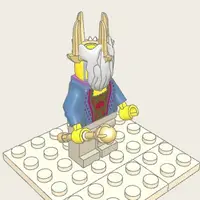
—
—
Forest meeting path2 figures · 4 lines · plain
Props there: Moly Plant
This is a HERMES VARIANT held to the base-Hermes identity (young, beardless, lithe traveller in a short chiton + chlamys, dark tousled hair, bare legs + sandals) but STRIPPED of every divine tell: NO petasos, NO winged sandals, NO caduceus.
—
Island of Syria memory4 figures · 4 lines · island
This is Odysseus the veteran fighter playing the harmless mendicant: he meets the swineherd's dogs not with the staff but with instant, deliberate submission — sitting down and letting the staff fall from his hand — then endures dismissal, and finally works…
A sturdy middle-aged-to-older herdsman in a rough belted tunic under a heavy hide cloak, weathered bearded face, leaning on a tall herdsman's staff.
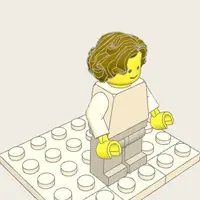
A memory-flashback variant of loyal Eumaeus: the SAME lineage identity carried back to childhood — a small ROYAL CHILD (scale ~0.55) in a fine child's tunic, the king's son of Syrie before the Phoenicians stole him. Un-weathered soft skin, no beard, the same…
—
Nymph cave2 figures · 4 lines · cave
Props there: Cave Sealing Stone
Armored / cloaked goddess with a borne spear and a pushed-back plumed helmet crest; bound hair; stable identity across views.
—
Phaeacian feast hall1 figures · 4 lines · interior
—
Troy interior memory set2 figures · 4 lines · interior
Props there: Helens Mixing Bowl
A beautiful woman in an elegant flowing gown, long hair, and a FINE JEWELLED DIADEM with a light veil that falls BEHIND the hair — the deliberate opposite of Penelope's grief-heavy drawn hood. Where Penelope reads as a dark, bowed, veiled dome, Helen reads…
Odysseus stripped of his king's tunic: same skin, same curly hair and beard (grizzled and filthy now), but scarred, in torn rags, folded down into a furtive stoop.
Wooden horse interior3 figures · 4 lines · interior
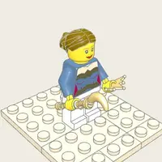
CHARACTER asset (a Helen variant: gown, long hair, diadem).
—
—
Sirens' island3 figures · 3 lines · island
Props there: Mast Ropes And Beeswax
—
—
—
Telepylus harbor3 figures · 3 lines · coast
—
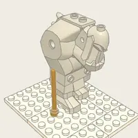
Both wear rough hide rags, both carry monstrous knit-browed faces with jaws torn open.
Each giant is HUGE, brutish, TWO-EYED (the read that sets them apart from the one-eyed Cyclopes) and performs one of three attack actions — hurl | spear | haul — aimed at the water below.
Weapon storeroom5 figures · 3 lines · interior
Props there: Odysseuss Bow, Palace Weapon Collection, Quiver And Arrows, Twelve Axe Heads
The rags snap to tunic under Athena's flare at u=0.5 — put divine-fx.athenas-restoration on that exact frame.
Youthful silhouette: slighter build, shorter stature, beardless, dark short hair, princely tunic + cloak.
—
the veiled queen of Ithaca, faithful wife who waits. Mature woman in a long dress under a sheer drawn veil, long hair framing the face; stable identity across views.
—
Aeolia floating island2 figures · 3 lines · island
Props there: Bag Of Winds
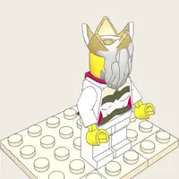
the genial wind-keeper king of the floating isle of Aeolia, who binds the storm-winds in an ox-hide bag and gives them to a guest, then, when that guest is blown back to his door a second time, recoils in horror and turns him away as a man the gods must hate.…
—
Ithacan meeting and funeral ground4 figures · 3 lines · plain
He begins folded on a knee over his son's body and comes up, degree by degree, until he is running with a levelled spear. Identity is five figure params (iron-grey head, straight-cut hair rather than Laertes's curls, a full beard, an elder's mantle over a…
Nothing here darkens them: the crowd's robes are graded 1..4 with skin at 2, Halitherses is a grey robe over a white beard, Eupithes is a light tunic with one mid-grey mantle wedge and bare shins, and (B24-S06)
—
Nothing here darkens them: the crowd's robes are graded 1..4 with skin at 2, Halitherses is a grey robe over a white beard, Eupithes is a light tunic with one mid-grey mantle wedge and bare shins, and (B24-S06)
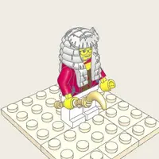
Medon the herald, who had hidden under an oxhide, and Phemius the bard, who laid down his lyre and clasped Odysseus's knees. Distinct silhouettes so the two never read as one doubled figure: · MEDON (LEFT) — the herald: dark greying cap of hair, short beard,…
A single scalar per member — its local `commit` — carries it continuously through three attitudes: commit = 0.0 GRIEVING veiled, head bowed, hands at the face, still commit -> 1.0 (militia) risen, head up on the stone, spear thrown up commit -> 1.0 (caution)…
Narrow monster strait3 figures · 3 lines · sea
—
—
CREATURE asset (custom multi-part geometry, NOT humanoid): a hidden DEN cut into a sheer CLIFF, from which erupt SIX long telescoping serpent NECKS, each ending in a fanged dog/wolf HEAD that targets independently; a GIRDLE of barking dog-heads rings the…
Aeaea coast and forest4 figures · 3 lines · coast
—
A sturdy, middle-aged veteran crewman: weathered skin, SHORT GRAYING hair + a full grizzled BEARD, plain sailor's TUNIC with a travel CLOAK, planted stocky build. Deliberately distinct from Odysseus (dark curls, kingly bearing) and from the young beardless…
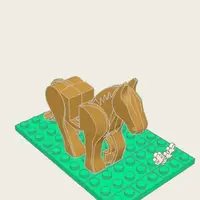
—
—
Cyclops beach and waiting ship4 figures · 3 lines · coast
—
A COLOSSAL one-eyed giant: a single great central eye (no paired eyes), a shaggy mane and wild beard, a muscular brute in a rough hide tunic.
—
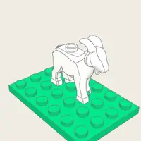
—
Ismarus coast and town3 figures · 3 lines · coast
—
—
—
Ithacan shore2 figures · 3 lines · coast
The mortal shell is complete (weathered skin, a full white loyalist's beard, a long robe and cloak) but one tell leaks through: the eyes stay unnaturally BRIGHT, an over-lit divine glint no old man owns.
Youthful silhouette: slighter build, shorter stature, beardless, dark short hair, princely tunic + cloak.
Palace outer yard3 figures · 3 lines · court
The rags snap to tunic under Athena's flare at u=0.5 — put divine-fx.athenas-restoration on that exact frame.
A sturdy middle-aged-to-older herdsman in a rough belted tunic under a heavy hide cloak, weathered bearded face, leaning on a tall herdsman's staff.
Eumaeus — grizzled, hide-cloaked, planted on a staff, arms swung open. Philoetius — the biggest of the three (a cattleman's frame), light sun-bleached tunic and bare drover's shins, pale grizzled curls, and a body that is always leaning TOWARD someone:…
Phaeacian orchard and garden3 figures · 3 lines · plain
—
—
—
Pylos harbor3 figures · 3 lines · coast
Youthful silhouette: slighter build, shorter stature, beardless, dark short hair, princely tunic + cloak.
Not an elder like Halitherses but a lean, alert man of RANK on the run: a bloodguilt exile of the Melampus prophetic line, fine robe + cloak gone travel-worn, intense far-seeing eyes, a seer's bearing.
—
Road from river to Scheria2 figures · 3 lines · plain
Props there: Phaeacian Tunic And Cloak
A fresh, graceful girl in a simple BELTED gown with long loose hair and a slim LIGHT FILLET (a thin diadem band — NOT the jewelled crown of the older queens). Where Helen reads as a jewelled, regal presence and Penelope as a dark, veiled, bowed dome, Nausicaa…
The SAME Odysseus (same skin, same curly hair, same beard) as the king and the Trojan beggar — but bathed by Phaeacian handmaids, anointed, and stood up to his full height. Where the beggar was grizzled, folded into a furtive stoop with disciplined eyes…
Secret Ithacan landing3 figures · 3 lines · coast
Youthful silhouette: slighter build, shorter stature, beardless, dark short hair, princely tunic + cloak.
Not an elder like Halitherses but a lean, alert man of RANK on the run: a bloodguilt exile of the Melampus prophetic line, fine robe + cloak gone travel-worn, intense far-seeing eyes, a seer's bearing.
—
Hand mills and grain room2 figures · 3 lines · interior
Props there: Millstone
The rags snap to tunic under Athena's flare at u=0.5 — put divine-fx.athenas-restoration on that exact frame.
Melantho is a black pinned coil and a fine gift-gown; Eurycleia is an opaque scarf and an apron.
Marriage chamber2 figures · 3 lines · interior
The rags snap to tunic under Athena's flare at u=0.5 — put divine-fx.athenas-restoration on that exact frame.
the veiled queen of Ithaca, faithful wife who waits. Mature woman in a long dress under a sheer drawn veil, long hair framing the face; stable identity across views.
Olympian decision space2 figures · 3 lines · olympus
—
Nothing here darkens them: the decree is paper-dominant by construction, Zeus is a light robe with a grey mane and Athena a grey armour with one cloak wedge, and the two of them together occupy well u (B24-S07)
Armored / cloaked goddess with a borne spear and a pushed-back plumed helmet crest; bound hair; stable identity across views.
Nothing here darkens them: the decree is paper-dominant by construction, Zeus is a light robe with a grey mane and Athena a grey armour with one cloak wedge, and the two of them together occupy well u (B24-S07)
Palace storeroom2 figures · 3 lines · interior
Props there: Barley Bags, Travel Wine Jars
Youthful silhouette: slighter build, shorter stature, beardless, dark short hair, princely tunic + cloak.
Elderly woman: headscarf (opaque kerchief), long dress under a working apron, a slightly stooped bearing.
Scheria city and harbor2 figures · 3 lines · coast
Props there: Water Pitcher
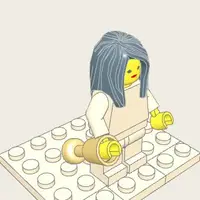
—
—
Scherian coast and river mouth1 figures · 3 lines · coast
Props there: Inos Veil
—
Odysseus returns Ino's veil to the sea, crawls ashore, and hides beneath two intertwined olive bushes. (B05-S06)
Upper chamber and stair2 figures · 3 lines · interior
Elderly woman: headscarf (opaque kerchief), long dress under a working apron, a slightly stooped bearing.
the veiled queen of Ithaca, faithful wife who waits. Mature woman in a long dress under a sheer drawn veil, long hair framing the face; stable identity across views.
Ithaca town road and fountain4 figures · 2 lines · plain
A sturdy middle-aged-to-older herdsman in a rough belted tunic under a heavy hide cloak, weathered bearded face, leaning on a tall herdsman's staff.
The rags snap to tunic under Athena's flare at u=0.5 — put divine-fx.athenas-restoration on that exact frame.
—
Where the swineherd is grizzled, hide-cloaked, planted on a staff and open-handed, Melanthius is a younger wiry man with black curls and a trimmed black beard, a suitor's gift-mantle thrown over a working tunic, bare goatherd shins — and a body language of…
Pylos-to-Sparta road3 figures · 2 lines · plain
Youthful and beardless where Odysseus is bearded and Telemachus dark-haired: sun-warmed skin, short sandy hair, a bright open host's face.
—
Youthful silhouette: slighter build, shorter stature, beardless, dark short hair, princely tunic + cloak.
Ogygia timber grove2 figures · 2 lines · coast
Props there: Shipbuilding Tool Set
A self-possessed goddess in a long flowing gown, loose immortal hair, and a subtle radiance — beautiful, proud, and stung when the man she keeps is ordered away.
—
Road to Hades6 figures · 1 lines · underworld
Props there: Hermess Wand
What changes is the INSTRUMENT and the JOB: · the caduceus (twin snakes, herald's staff) is put away, and in its place he carries the RHABDOS — the plain golden wand of Book 24, a bright banded rod with a charm-star at the tip. Snakeless: this is the soul-…
—
Tonally the members are LIGHT PLANES (near-paper wisp, pale cuirass, pale skin) held by a HARD BLACK contour, with solid black reserved for the helmet crests, the hollow eye-slots, the spear heads and the wound marks.
—
Distinct silhouette: a broad BEARDED warrior-king in battle ARMOR under a heavy cloak, faded near-white hair and beard, standing bare-shinned in sandals. Over the armor sit bespoke WOUND-MARKS — the death-blows at throat and breast — drawn a touch more…
In Book XXII he nicked Telemachus's wrist and Telemachus put a spear straight through him. He is the ONLY narrator of the massacre the poem gives us from inside the defeat: the loom unwoven at night, the beggar nobody searched, the axes, the bow, the doors.
Lotus shore and meadow3 figures · 1 lines · coast
Props there: Lotus Fruit
—
—
—
Mount Parnassus hunt3 figures · 1 lines · mountain
Props there: Spear And Wound Bandage
—
—
—
Cyclops coast3 figures · 1 lines · coast
—
—
States: graze / alarm / run / hunted / kill (a fallen goat with a spear) / carcass (a limp goat slung over a carry-pole).
Goat island harbor3 figures · 1 lines · island
—
—
States: graze / alarm / run / hunted / kill (a fallen goat with a spear) / carcass (a limp goat slung over a carry-pole).
Palace dung heap and gate3 figures · 1 lines · court
The rags snap to tunic under Athena's flare at u=0.5 — put divine-fx.athenas-restoration on that exact frame.
—
A sturdy middle-aged-to-older herdsman in a rough belted tunic under a heavy hide cloak, weathered bearded face, leaning on a tall herdsman's staff.
Farmhouse feast4 figures · 1 lines · plain
Laertes — grey CURLY head + full beard, permanently stooped, bereft. Eumaeus — grizzled short hair, hide cloak, planted and sturdy.
The transformation is three continuous per-member scalars — halt (walking -> stopped), hail (tool down, arms up) and armed (tool -> spear, straw hat -> helmet, free hand -> shield) — so every phase is the same body differently aimed. Black is spent only on…
This is the SAME man as `character.laertes`: same white head, same beard, same sun-worn skin. What changes is the FRAME he stands in — stature, span, the spine unfolded — and the clean cloak over the working tunic.
The rags snap to tunic under Athena's flare at u=0.5 — put divine-fx.athenas-restoration on that exact frame.
Road to Laertes's farm3 figures · 1 lines · plain
The rags snap to tunic under Athena's flare at u=0.5 — put divine-fx.athenas-restoration on that exact frame.
A member's `arm` value runs 0 -> 1 and the kit crosses it in order: 0.00 farm kit — staff, ox-hide, jug; bare head, hair cap 0.28 the tool is set down and the helmet comes up in the hand 0.50 THE SNAP — helmet on, shield and spear take the two hands 1.00…
Youthful silhouette: slighter build, shorter stature, beardless, dark short hair, princely tunic + cloak.
Book by book
Every scene: where it is set, who speaks and how often, the key beat the film plays it on (scenes/_direction.mjs),
and what the LEGO world has of it.
Book I · Athena Inspires the Prince
19 lines of dialogue in 6 scenes| Scene | Set in | Speakers | Lines | Has |
|---|---|---|---|---|
| 01-S01 The Gods Consider Odysseus | Olympian council hall | Zeus 2 · Athena 1 | 3 +0 | |
| 01-S02 Athena's Two-Part Plan | Olympian council hall inferred | Athena 2 | 2 +1 | |
| 01-S03 The Stranger at the Threshold | Odysseus's palace threshold and hall | The suitors 1 · Telemachus 1 | 2 +0 | |
| 01-S04 Mentes Questions the Prince | Odysseus's palace threshold and hall inferred | Athena 2 · Telemachus 1 | 3 +0 | |
| 01-S05 Athena Arms Telemachus with a Course | Odysseus's palace threshold and hall inferred | Athena 3 · Telemachus 1 | 4 +0 | |
| 01-S06 The Goddess Departs; the Prince Speaks | Odysseus's palace threshold and hall | Telemachus 2 · Athena 1 · Penelope 1 · Suitors 1 | 5 +1 |
Book II · Telemachus Sets Sail
22 lines of dialogue in 7 scenes| Scene | Set in | Speakers | Lines | Has |
|---|---|---|---|---|
| 02-S01 Telemachus Calls the Assembly | Ithacan assembly ground | Telemachus 2 · Aegyptius 1 | 3 +0 | |
| 02-S02 The Secret of Penelope's Loom | Ithacan assembly ground | Antinous 3 | 3 +1 | framesfilmkit |
| 02-S03 The Eagles Tear the Air | Ithacan assembly ground | Telemachus 1 · Halitherses 1 · Eurymachus 1 | 3 +0 | |
| 02-S04 Mentor Rebukes Ithaca | Ithacan assembly ground | Leocritus 2 · Telemachus 1 · Mentor 1 | 4 +1 | |
| 02-S05 Athena Answers on the Shore | Ithacan shore | Athena 2 · Telemachus 1 | 3 +1 | |
| 02-S06 The Secret Stores | Palace storeroom | Telemachus 2 · Eurycleia 1 | 3 +0 | |
| 02-S07 The Night Launch | at sea | Athena 2 · Volunteer crew 1 | 3 +1 |
Book III · King Nestor Remembers
19 lines of dialogue in 6 scenes| Scene | Set in | Speakers | Lines | Has |
|---|---|---|---|---|
| 03-S01 Arrival at Poseidon's Sacrifice | Pylos sacrificial beach | Athena 2 · Telemachus 1 | 3 +2 | |
| 03-S02 Telemachus Questions Nestor | Pylos sacrificial beach | Nestor 3 · Telemachus 1 | 4 +0 | |
| 03-S03 The Broken Return from Troy | Pylos sacrificial beach inferred | Nestor 3 · Odysseus 1 | 4 +1 | |
| 03-S04 Orestes as the Measure | Nestor's palace and courtyard | Nestor 2 · Telemachus 1 · Athena 1 | 4 +0 | |
| 03-S05 Athena Reveals Herself at Pylos | Nestor's palace and courtyard | Athena 1 · Nestor 1 | 2 +2 | |
| 03-S06 The Chariot Road to Sparta | Pylos-to-Sparta road | Nestor 1 · Pisistratus 1 | 2 +1 |
Book IV · The King and Queen of Sparta
27 lines of dialogue in 7 scenes| Scene | Set in | Speakers | Lines | Has |
|---|---|---|---|---|
| 04-S01 The Double Wedding at Sparta | Menelaus's palace | Telemachus 2 · Menelaus 1 | 3 +2 | |
| 04-S02 Recognition through Tears | Menelaus's palace | Menelaus 2 · Helen 1 · Pisistratus 1 | 4 +0 | |
| 04-S03 Helen's Drug and the Beggar in Troy | Troy interior memory set | Helen 4 | 4 +0 | kit |
| 04-S04 The Wooden Horse | Wooden horse interior | Menelaus 1 · Helen 1 · Odysseus 1 · Telemachus 1 | 4 +0 | framesfilmkit |
| 04-S05 Menelaus Wrestles Proteus | Seal beach | Menelaus 2 · Proteus 2 · Telemachus 1 | 5 +0 | framesfilm |
| 04-S06 The Gifts and the Eagle Omen | Menelaus's palace | Menelaus 2 · Helen 1 | 3 +1 | |
| 04-S07 The Suitors Prepare an Ambush | Odysseus's palace threshold and hall inferred | Medon 2 · Antinous 1 · Athena 1 | 4 +2 |
Book V · Odysseus—Nymph and Shipwreck
18 lines of dialogue in 6 scenes| Scene | Set in | Speakers | Lines | Has |
|---|---|---|---|---|
| 05-S01 Hermes Carries the Decree | Ogygia cavern and grove, Olympian council hall | Hermes 2 · Zeus 1 | 3 +1 | kit |
| 05-S02 Calypso Receives the Order | Ogygia cavern and grove | Calypso 3 · Hermes 1 | 4 +0 | |
| 05-S03 Odysseus Distrusts Freedom | Ogygia shore | Calypso 3 · Odysseus 1 | 4 +1 | |
| 05-S04 Building the Raft | Ogygia timber grove | Calypso 2 | 2 +0 | framesfilmkit |
| 05-S05 Poseidon Breaks the Sea | at sea | Poseidon 1 · Athena 1 | 2 +3 | framesfilmkit |
| 05-S06 The River Accepts the Castaway | Scherian coast and river mouth | Athena 2 · Odysseus 1 | 3 +0 |

Book VI · The Princess and the Stranger
13 lines of dialogue in 4 scenes| Scene | Set in | Speakers | Lines | Has |
|---|---|---|---|---|
| 06-S01 Athena Enters Nausicaa's Dream | Phaeacian royal chamber | Athena 2 · Nausicaa 1 · Alcinous 1 | 4 +1 | |
| 06-S02 Laundry and Ball at the River | River washing pools | Nausicaa 2 · Odysseus 1 | 3 +1 | |
| 06-S03 The Naked Stranger Emerges | River washing pools inferred | Odysseus 2 · Nausicaa 1 | 3 +2 | framesfilm |
| 06-S04 Bath, Clothing, and the Road to Town | Road from river to Scheria | Nausicaa 3 | 3 +1 |
Book VII · Phaeacia's Halls and Gardens
11 lines of dialogue in 4 scenes| Scene | Set in | Speakers | Lines | Has |
|---|---|---|---|---|
| 07-S01 Athena Hides the Walk through Scheria | Scheria city and harbor | Athena 2 · Nausicaa 1 | 3 +0 | |
| 07-S02 The Palace and the Gardens | Alcinous's palace, Phaeacian orchard and garden | Odysseus 3 | 3 +1 | |
| 07-S03 Supplication at Arete's Knees | Alcinous's palace inferred | Athena 1 · Echeneus 1 · Odysseus 1 | 3 +0 | |
| 07-S04 Arete Recognizes Her Work | Alcinous's palace | Odysseus 1 · Alcinous 1 | 2 +2 |
Book VIII · A Day for Songs and Contests
14 lines of dialogue in 5 scenes| Scene | Set in | Speakers | Lines | Has |
|---|---|---|---|---|
| 08-S01 The Phaeacian Assembly and the Ship | Phaeacian assembly ground | Athena 1 · Alcinous 1 | 2 +1 | |
| 08-S02 Demodocus Sings of the Quarrel | Feast hall at attentive silence | Feast listeners 1 · Alcinous 1 | 2 +1 | |
| 08-S03 The Athletic Challenge | Phaeacian athletic field | Laodamas 1 · Euryalus 1 · Odysseus 1 · Alcinous 1 | 4 +1 | |
| 08-S04 The Dance and the Net of Hephaestus | Phaeacian assembly ground | Demodocus 1 · Odysseus 1 · Euryalus 1 | 3 +1 | |
| 08-S05 The Trojan Horse Song and the Name | Feast hall at attentive silence | Odysseus 2 · Alcinous 1 | 3 +1 | framesfilmkit |
Book IX · In the One-Eyed Giant's Cave
32 lines of dialogue in 11 scenes| Scene | Set in | Speakers | Lines | Has |
|---|---|---|---|---|
| 09-S01 Odysseus Names Himself | Phaeacian feast hall | Odysseus 4 | 4 +0 | |
| 09-S02 The Raid on the Cicones | Ismarus coast and town | Odysseus's fleet crews 2 · Cicones army 1 | 3 +1 | |
| 09-S03 The Lotus-Eaters | Lotus shore and meadow | Odysseus 1 | 1 +4 | framesfilm |
| 09-S04 Goat Island and the Cyclops Coast | Cyclops coast, Goat island harbor | Odysseus 1 | 1 +3 | |
| 09-S05 The Empty Cave | Polyphemus's cave | Odysseus 3 | 3 +1 | |
| 09-S06 Polyphemus Seals the Cave | Polyphemus's cave inferred | Polyphemus 1 | 1 +1 | |
| 09-S07 The First Killings | Polyphemus's cave inferred | Odysseus 3 · Polyphemus 1 | 4 +1 | |
| 09-S08 The Name Nobody and the Stake | Polyphemus's cave | Odysseus 3 | 3 +1 | |
| 09-S09 The Blinding | Polyphemus's cave | Polyphemus 3 · Odysseus 1 · Cyclopes outside 1 | 5 +0 | framesfilmkit |
| 09-S10 Escape beneath the Rams | Cyclops beach and waiting ship | Odysseus 2 · Polyphemus 1 | 3 +1 | |
| 09-S11 The Boast and the Curse | at sea | Odysseus 2 · Polyphemus 2 | 4 +1 | framesfilmkit |

Book X · The Bewitching Queen of Aeaea
31 lines of dialogue in 8 scenes| Scene | Set in | Speakers | Lines | Has |
|---|---|---|---|---|
| 10-S01 Aeolus and the Bag of Winds | Aeolia floating island | Aeolus 3 | 3 +2 | framesfilmkit |
| 10-S02 The Laestrygonian Harbor | Telepylus harbor | Odysseus 3 | 3 +3 | framesfilmkit |
| 10-S03 Scouts on Aeaea | Aeaea coast and forest | Odysseus 2 · Eurylochus 1 | 3 +1 | |
| 10-S04 Circe Transforms the Crew | Circe's forest palace | Circe 3 · Eurylochus 2 | 5 +1 | framesfilmkit |
| 10-S05 Hermes Gives the Moly | Forest meeting path | Hermes 3 · Odysseus 1 | 4 +0 | framesfilmkit |
| 10-S06 Odysseus Defeats Circe's Spell | Circe's forest palace inferred | Circe 3 · Odysseus 1 | 4 +2 | kit |
| 10-S07 The Men Restored | Circe's forest palace | Circe 4 · Odysseus 1 | 5 +1 | kit |
| 10-S08 The Road to the Dead | Circe's forest palace inferred | Odysseus 2 · Circe 1 · Elpenor 1 | 4 +1 |
Book XI · The Kingdom of the Dead
21 lines of dialogue in 8 scenes| Scene | Set in | Speakers | Lines | Has |
|---|---|---|---|---|
| 11-S01 The Blood Pit Opens | Cimmerian shore and underworld pit | Odysseus 2 | 2 +2 | framesfilmkit |
| 11-S02 Elpenor Asks for Burial | Cimmerian shore and underworld pit inferred | Elpenor's shade 2 · Odysseus 1 | 3 +1 | |
| 11-S03 Tiresias Names the Cost | Cimmerian shore and underworld pit | Tiresias 4 | 4 +1 | kit |
| 11-S04 Anticleia and the Three Embraces | Cimmerian shore and underworld pit inferred | Odysseus 4 | 4 +0 | |
| 11-S05 The Heroines of the Past | Cimmerian shore and underworld pit inferred | Odysseus 1 | 1 +3 | |
| 11-S06 Agamemnon's Warning | Cimmerian shore and underworld pit inferred | — | 0 +4 | |
| 11-S07 Achilles Chooses Life in Retrospect | Cimmerian shore and underworld pit | Odysseus 3 | 3 +3 | |
| 11-S08 Judges, Punishments, and Flight | Punishment landscape | Odysseus 2 · Heracles's phantom 2 | 4 +1 |
Book XII · The Cattle of the Sun
18 lines of dialogue in 7 scenes| Scene | Set in | Speakers | Lines | Has |
|---|---|---|---|---|
| 12-S01 Elpenor's Funeral | Aeaea funeral shore | Circe 1 | 1 +3 | |
| 12-S02 Circe Maps the Dangers | Aeaea funeral shore inferred | Circe 3 · Odysseus 1 | 4 +1 | |
| 12-S03 The Sirens' Song | Sirens' island | Odysseus 2 · The Sirens 1 | 3 +3 | framesfilmkit |
| 12-S04 Between Scylla and Charybdis | Narrow monster strait | Odysseus 2 · Six seized sailors 1 | 3 +2 | framesfilmkit |
| 12-S05 The Island of the Sun | Thrinacia | Odysseus 2 | 2 +3 | |
| 12-S06 The Cattle Are Slaughtered | Thrinacia | Eurylochus 2 | 2 +3 | framesfilm |
| 12-S07 Zeus Destroys the Last Ship | at sea | Odysseus 2 · Zeus 1 | 3 +3 | framesfilm |

Book XIII · Ithaca at Last
18 lines of dialogue in 5 scenes| Scene | Set in | Speakers | Lines | Has |
|---|---|---|---|---|
| 13-S01 The Phaeacians Carry Odysseus Home | Phorcys harbor | Odysseus 2 · Alcinous 1 · Phaeacian convoy crew 1 | 4 +1 | framesfilm |
| 13-S02 Odysseus Wakes on an Unknown Shore | Phorcys harbor inferred | Odysseus 3 · Athena 1 | 4 +0 | |
| 13-S03 The Cretan Lie Meets Its Match | Phorcys harbor inferred | Odysseus 2 · Athena 1 | 3 +2 | |
| 13-S04 The Treasure Is Hidden | Nymph cave | Athena 4 | 4 +0 | |
| 13-S05 Athena Makes the Beggar | Phorcys harbor inferred | Athena 3 | 3 +1 |
Book XIV · The Loyal Swineherd
13 lines of dialogue in 4 scenes| Scene | Set in | Speakers | Lines | Has |
|---|---|---|---|---|
| 14-S01 The Dogs at Eumaeus's Yard | Eumaeus's pig farm | Eumaeus 2 · Odysseus 1 | 3 +1 | framesfilm |
| 14-S02 The Swineherd Laments His Master | Eumaeus's pig farm | Eumaeus 3 · Odysseus 1 | 4 +0 | |
| 14-S03 The Cretan Tale at the Hut | Eumaeus Hut Interior inferred | Eumaeus 3 | 3 +1 | |
| 14-S04 The Cloak Test | Eumaeus Hut Interior inferred | Eumaeus 2 · Odysseus 1 | 3 +1 |
Book XV · The Prince Sets Sail for Home
17 lines of dialogue in 5 scenes| Scene | Set in | Speakers | Lines | Has |
|---|---|---|---|---|
| 15-S01 Athena Wakes Telemachus | Menelaus's palace inferred | Athena 3 · Telemachus 1 | 4 +0 | |
| 15-S02 Farewell from Menelaus and Helen | Menelaus's palace inferred | Telemachus 2 · Helen 1 | 3 +1 | |
| 15-S03 Theoclymenus Joins the Voyage | Pylos harbor | Telemachus 2 · Theoclymenus 1 | 3 +1 | |
| 15-S04 Eumaeus Tells His Own Story | Island of Syria memory | Odysseus 1 · Odysseus as beggar 1 · Eumaeus 1 · Laertes 1 | 4 +0 | |
| 15-S05 Telemachus Lands in Secret | Secret Ithacan landing | Telemachus 2 · Theoclymenus 1 | 3 +1 |
Book XVI · Father and Son
22 lines of dialogue in 6 scenes| Scene | Set in | Speakers | Lines | Has |
|---|---|---|---|---|
| 16-S01 The Son Reaches the Hut | Eumaeus Hut Interior | Telemachus 2 · Eumaeus 1 · Odysseus 1 | 4 +0 | |
| 16-S02 Eumaeus Carries News to Penelope | Eumaeus Hut Interior | Telemachus 1 · Eumaeus 1 | 2 +0 | |
| 16-S03 The Father Reveals Himself | Eumaeus Hut Interior | Telemachus 3 · Athena 1 · Odysseus 1 | 5 +0 | framesfilm |
| 16-S04 The Plan against the Suitors | Megaron Hall | Telemachus 3 · Odysseus 2 | 5 +0 | |
| 16-S05 The Ambush Fails and the Suitors Divide | Megaron Hall | Telemachus 1 · Antinous 1 · Amphinomus 1 · Penelope 1 | 4 +2 | |
| 16-S06 The Beggar Returns | Eumaeus Hut Interior | Athena 1 · Eumaeus 1 | 2 +2 |
Book XVII · Stranger at the Gates
22 lines of dialogue in 7 scenes| Scene | Set in | Speakers | Lines | Has |
|---|---|---|---|---|
| 17-S01 Telemachus Returns to the Palace | Megaron Hall | Telemachus 2 · Eurycleia 1 · Theoclymenus 1 | 4 +0 | |
| 17-S02 The Road with Melanthius | Ithaca town road and fountain | Eumaeus 1 · Odysseus 1 | 2 +1 | |
| 17-S03 Argos Recognizes His Master | Palace dung heap and gate | Odysseus 1 | 1 +2 | framesfilmkit |
| 17-S04 The Beggar Enters His Hall | Megaron Hall | Eumaeus 1 · Odysseus 1 | 2 +1 | |
| 17-S05 Antinous Throws the Stool | Megaron Hall | Odysseus 2 · Antinous 2 · Odysseus as beggar 1 | 5 +1 | |
| 17-S06 Penelope Summons the Stranger | Megaron Hall | Penelope 3 · Odysseus 1 · Telemachus 1 | 5 +0 | |
| 17-S07 Eumaeus Leaves the Hall | Megaron Hall | Eumaeus 2 · Telemachus 1 | 3 +0 |
Book XVIII · The Beggar-King of Ithaca
23 lines of dialogue in 5 scenes| Scene | Set in | Speakers | Lines | Has |
|---|---|---|---|---|
| 18-S01 Irus Challenges the Stranger | Megaron Hall | Odysseus as beggar 2 · Antinous 1 · Odysseus 1 | 4 +0 | |
| 18-S02 Odysseus Drops Irus | Fight threshold | Odysseus 3 · Athena 1 · Irus 1 | 5 +1 | |
| 18-S03 The Warning to Amphinomus | Megaron Hall | Odysseus 2 · Amphinomus 1 | 3 +1 | |
| 18-S04 Penelope Appears before the Suitors | Megaron Hall | Athena 2 · Penelope 2 | 4 +1 | |
| 18-S05 Melantho and Eurymachus Attack | Megaron Hall | Melantho 2 · Eurymachus 2 · Penelope 1 · Odysseus 1 · Telemachus 1 | 7 +0 |
Book XIX · Penelope and Her Guest
21 lines of dialogue in 6 scenes| Scene | Set in | Speakers | Lines | Has |
|---|---|---|---|---|
| 19-S01 The Weapons Leave the Hall | Megaron Hall, Weapon storeroom | Odysseus 1 · Athena 1 · Telemachus 1 | 3 +1 | |
| 19-S02 Penelope Begins the Test | Megaron Hall | Penelope 4 | 4 +0 | |
| 19-S03 The Stranger Describes Odysseus | Megaron Hall | Penelope 3 · Odysseus 2 | 5 +0 | |
| 19-S04 Eurycleia Finds the Scar | Megaron Hall | Odysseus 3 · Penelope 1 | 4 +1 | framesfilmkit |
| 19-S05 The Boar Hunt on Parnassus | Mount Parnassus hunt | Odysseus 1 | 1 +4 | |
| 19-S06 The Dream of the Geese | Megaron Hall | Penelope 3 · Odysseus 1 | 4 +1 |
Book XX · Portents Gather
17 lines of dialogue in 5 scenes| Scene | Set in | Speakers | Lines | Has |
|---|---|---|---|---|
| 20-S01 The Restless Night | Odysseus's palace threshold and hall inferred | Athena 2 · Odysseus 1 · Penelope 1 | 4 +0 | |
| 20-S02 Thunder and the Mill Woman | Hand mills and grain room | Odysseus 2 · Mill woman 1 | 3 +0 | |
| 20-S03 The Herdsmen Arrive | Megaron Hall | Eurycleia 1 · Eumaeus 1 · Melanthius 1 · Philoetius 1 · Odysseus 1 | 5 +0 | |
| 20-S04 The Ox Hoof | Megaron Hall | Telemachus 2 · Ctesippus 1 | 3 +1 | |
| 20-S05 The Hall of Death | Megaron Hall | Theoclymenus 2 | 2 +1 |
Book XXI · Odysseus Strings His Bow
15 lines of dialogue in 7 scenes| Scene | Set in | Speakers | Lines | Has |
|---|---|---|---|---|
| 21-S01 Penelope Retrieves the Bow | Megaron Hall, Weapon storeroom | — | 0 +1 | |
| 21-S02 The Contest Is Set | Megaron Hall | Penelope 1 · Antinous 1 | 2 +1 | |
| 21-S03 The Suitors Fail the Bow | Megaron Hall | Leiodes 1 · Eurymachus 1 · Antinous 1 | 3 +1 | |
| 21-S04 Odysseus Recruits the Herdsmen | Palace outer yard | Odysseus 3 | 3 +1 | |
| 21-S05 The Beggar Requests the Bow | Megaron Hall | Odysseus 1 · Penelope 1 · Telemachus 1 | 3 +1 | |
| 21-S06 The Doors Are Secured | Megaron Hall | Eurycleia 1 | 1 +1 | |
| 21-S07 The Bow Sings | Megaron Hall | Odysseus 2 · Zeus 1 | 3 +0 | framesfilmkit |
Book XXII · Slaughter in the Hall
28 lines of dialogue in 8 scenes| Scene | Set in | Speakers | Lines | Has |
|---|---|---|---|---|
| 22-S01 Antinous Falls | Megaron Hall | Odysseus 2 · Antinous 1 · Suitors 1 | 4 +0 | framesfilmkit |
| 22-S02 Eurymachus Bargains and Attacks | Megaron Hall | Eurymachus 2 · Odysseus 1 · Amphinomus 1 | 4 +0 | |
| 22-S03 The Storeroom Arms the Defenders | Megaron Hall | Telemachus 2 | 2 +2 | |
| 22-S04 Melanthius Arms the Suitors | Megaron Hall | Odysseus 3 · Melanthius 1 | 4 +0 | |
| 22-S05 Athena Tests the Battle | Megaron Hall | Athena 2 · Odysseus 2 | 4 +2 | |
| 22-S06 The Hall Is Cleared | Megaron Hall | Odysseus 3 · Phemius 1 | 4 +1 | |
| 22-S07 The Disloyal Maids | Megaron Hall | Eurycleia 1 · Telemachus 1 | 2 +3 | |
| 22-S08 The House Calls Penelope | Megaron Hall | Odysseus 3 · Loyal maids 1 | 4 +0 |
Book XXIII · The Great Rooted Bed
18 lines of dialogue in 6 scenes| Scene | Set in | Speakers | Lines | Has |
|---|---|---|---|---|
| 23-S01 Eurycleia Wakes Penelope | Upper chamber and stair | Eurycleia 2 · Penelope 1 | 3 +0 | |
| 23-S02 Penelope Studies the Stranger | Megaron Hall | Telemachus 2 · Odysseus 2 | 4 +0 | |
| 23-S03 The False Wedding Noise | Megaron Hall | Odysseus 2 · Phemius 1 | 3 +0 | |
| 23-S04 The Bed Test | Megaron Hall | Penelope 3 · Odysseus 1 | 4 +1 | framesfilmkit |
| 23-S05 Odysseus Tells the Remaining Journey | Marriage chamber | Odysseus 2 · Penelope 1 | 3 +0 | |
| 23-S06 Departure for Laertes | Road to Laertes's farm | Odysseus 1 | 1 +0 |
Book XXIV · Peace
23 lines of dialogue in 9 scenes| Scene | Set in | Speakers | Lines | Has |
|---|---|---|---|---|
| 24-S01 The Suitors Enter Hades | Road to Hades | Hermes 1 | 1 +2 | |
| 24-S02 Agamemnon Hears of Penelope's Fidelity | Road to Hades | — | 0 +4 | |
| 24-S03 Odysseus Tests Laertes | Laertes's orchard | Odysseus 3 · Laertes 1 | 4 +0 | framesfilm |
| 24-S04 The Scar and the Orchard Trees | Laertes's orchard | Odysseus 2 · Laertes 2 | 4 +0 | |
| 24-S05 Laertes Is Restored | Farmhouse feast | Dolius 1 | 1 +1 | framesfilm |
| 24-S06 The Families Demand Revenge | Ithacan meeting and funeral ground | Medon and Phemius 1 · Halitherses 1 · Eupithes 1 | 3 +2 | |
| 24-S07 Zeus and Athena Set the Terms | Olympian decision space | Zeus 2 · Athena 1 | 3 +0 | |
| 24-S08 The Last Clash | Farm battlefield at peace | Odysseus 2 · Athena 1 · Laertes 1 | 4 +1 | |
| 24-S09 Athena Makes Peace | Farm battlefield at peace | Odysseus 2 · Athena 1 | 3 +1 |
The gaps
Places where the poem speaks and the LEGO world has not yet caught up, the most-spoken first.
No keyframes and no kit
38 locations with dialogue
- Odysseus's palace threshold and hall 22 lines · 6 sc
- Pylos sacrificial beach 11 lines · 3 sc
- Alcinous's palace 8 lines · 3 sc
- Farm battlefield at peace 7 lines · 2 sc
- Nestor's palace and courtyard 6 lines · 2 sc
- Aeaea funeral shore 5 lines · 2 sc
- Phaeacian assembly ground 5 lines · 2 sc
- Fight threshold 5 lines · 1 sc
- Ogygia shore 4 lines · 1 sc
- Phaeacian athletic field 4 lines · 1 sc
- Phaeacian royal chamber 4 lines · 1 sc
- Punishment landscape 4 lines · 1 sc
- Island of Syria memory 4 lines · 1 sc
- Nymph cave 4 lines · 1 sc
- Phaeacian feast hall 4 lines · 1 sc
and 23 more
No kit
47 locations with dialogue
- Odysseus's palace threshold and hall 22 lines · 6 sc
- Eumaeus Hut Interior 19 lines · 6 sc
- Phorcys harbor 14 lines · 4 sc
- Pylos sacrificial beach 11 lines · 3 sc
- Alcinous's palace 8 lines · 3 sc
- Laertes's orchard 8 lines · 2 sc
- Farm battlefield at peace 7 lines · 2 sc
- Eumaeus's pig farm 7 lines · 2 sc
- River washing pools 6 lines · 2 sc
- Nestor's palace and courtyard 6 lines · 2 sc
- Aeaea funeral shore 5 lines · 2 sc
- Phaeacian assembly ground 5 lines · 2 sc
- Fight threshold 5 lines · 1 sc
- Seal beach 5 lines · 1 sc
- Thrinacia 4 lines · 2 sc
and 32 more
No keyframes
44 locations with dialogue
- Odysseus's palace threshold and hall 22 lines · 6 sc
- Menelaus's palace 17 lines · 5 sc
- Pylos sacrificial beach 11 lines · 3 sc
- Alcinous's palace 8 lines · 3 sc
- Olympian council hall 8 lines · 3 sc
- Farm battlefield at peace 7 lines · 2 sc
- Ogygia cavern and grove 7 lines · 2 sc
- Nestor's palace and courtyard 6 lines · 2 sc
- Aeaea funeral shore 5 lines · 2 sc
- Phaeacian assembly ground 5 lines · 2 sc
- Fight threshold 5 lines · 1 sc
- Ogygia shore 4 lines · 1 sc
- Phaeacian athletic field 4 lines · 1 sc
- Phaeacian royal chamber 4 lines · 1 sc
- Punishment landscape 4 lines · 1 sc
and 29 more
No location card
0 locations with dialogue (every location asset has its card)
Scenes with no set
4 scenes at open sea
- OD-B02-S07 The Night Launch 3 lines
- OD-B05-S05 Poseidon Breaks the Sea 2 lines
- OD-B09-S11 The Boast and the Curse 4 lines
- OD-B12-S07 Zeus Destroys the Last Ship 3 lines
Atlas places with no asset
folded by the film into another set
aftermath-hall, bow-storeroom, cleaned-palace-hall, festival-ready-hall, night-hearth-interview, night-palace-hall, palace-family-chamber, palace-night-interior, recognition-seating
How this was measured
- lines. A spoken line is an entry of atlas/spoken-lines/lines-*.json whose "line" is non-empty (74 turns are silent action). Lines are matched to scenes exactly by their METIS turn id, OD-Bnn-Snn-Tnn, whose prefix is the scene id; the speaker of each is the "sp" of the same turn id in viewer/performance-turns.json (the line files carry no speaker). "dialogue" excludes the narrator (PERFORMER.NARRATOR); "lines" includes it.
- locations. A scene's location is what its scene file places: `import … from "../assets/location/<id>.mjs"` and `asset:"location.<id>"` in its code (comments stripped). The atlas's own location ids are kept as atlas_locations; nine of them name no asset (the film folded them into megaron-hall and weapon-storeroom) and appear as atlas_aliases. 24 scenes that place no location are given one by hand (INFERRED, location_source "inferred", with the reason); 4 at open sea are left unplaced. A scene that places two sets counts its lines at both.
- landscape. Terrain: the id decides the primary kind when it names one (shore, cave, hall…); otherwise, and for the secondary kinds, keyword counts over the texts (the asset's own header weighted 3x). Vegetation, roads, water, architecture, time and weather: fixed word lists matched in the location asset's header comment ("asset"), the atlas registry's description of it ("atlas") and the header comment and beats of every scene set there (scene id). Each term keeps its sources and a snippet. A term named only in the text of one scene (not by the asset or atlas) is set apart in mentioned_once, since it may belong to a place the scene only mentions; terms named in two scenes, or a fifth of a set's scenes when it has more than ten, are kept. Secondary terrain kinds are read from the asset and atlas only. States are the asset's own `states` nodes.
- costumes. Figures are the character/ensemble/creature assets placed in the scenes set there. "wears" is lifted from the figure's own asset header (sentences naming clothing or things carried); "staged" from the scene header sentences naming the figure and a garment or object.
- flags. has_location_card: odyssey/cards/<location>.mpd exists. has_keyframes: odyssey/keyframes/<scene>/sheet.jpg. in_film: film-readymades/build_odyssey.py SCENES. kit: kitpages.SCENES plus the scene files named in each kit.json "sources"; a location also has a kit when a kit.json names its asset file. A slug in kitpages.SCENES with no kit on disk is listed as kits_planned, not as a kit.
- inferred scenes. B01-S02 → olympian-council-hall; B01-S04 → odysseuss-palace-threshold-and-hall; B01-S05 → odysseuss-palace-threshold-and-hall; B03-S03 → pylos-sacrificial-beach; B04-S07 → odysseuss-palace-threshold-and-hall; B06-S03 → river-washing-pools; B07-S03 → alcinouss-palace; B09-S06 → polyphemuss-cave; B09-S07 → polyphemuss-cave; B10-S06 → circes-forest-palace; B10-S08 → circes-forest-palace; B11-S02 → cimmerian-shore-and-underworld-pit; B11-S04 → cimmerian-shore-and-underworld-pit; B11-S05 → cimmerian-shore-and-underworld-pit; B11-S06 → cimmerian-shore-and-underworld-pit; B12-S02 → aeaea-funeral-shore; B13-S02 → phorcys-harbor; B13-S03 → phorcys-harbor; B13-S05 → phorcys-harbor; B14-S03 → eumaeus-hut-interior; B14-S04 → eumaeus-hut-interior; B15-S01 → menelauss-palace; B15-S02 → menelauss-palace; B20-S01 → odysseuss-palace-threshold-and-hall.